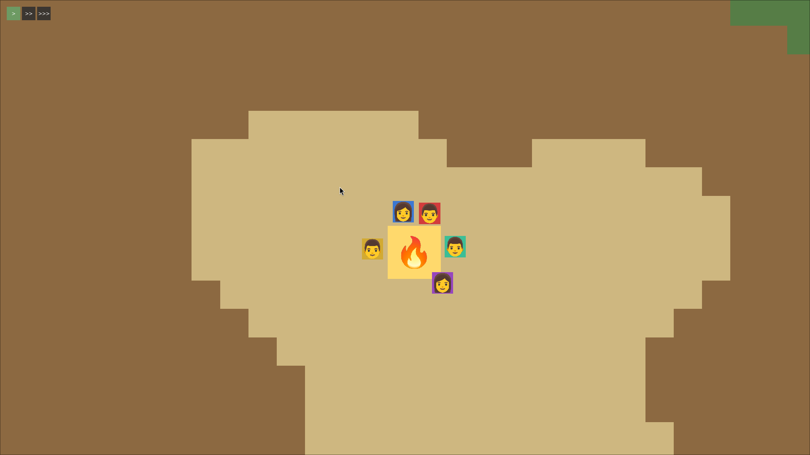
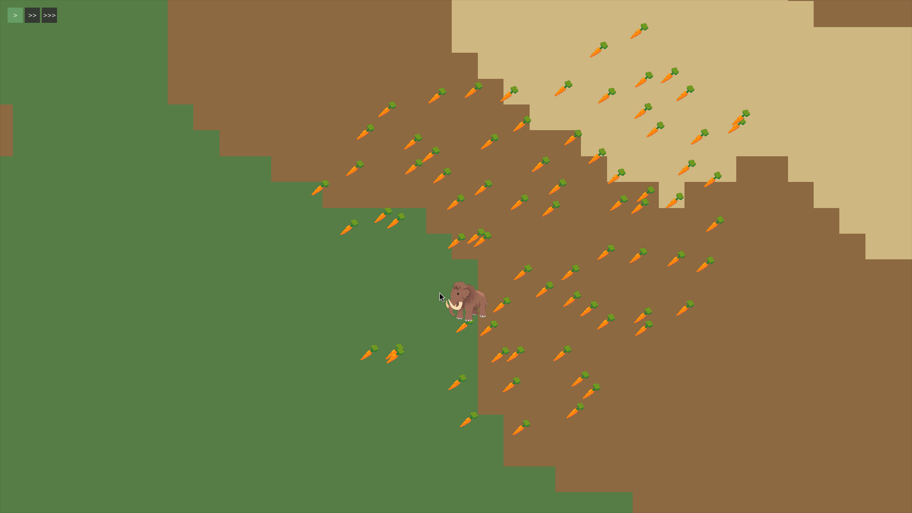
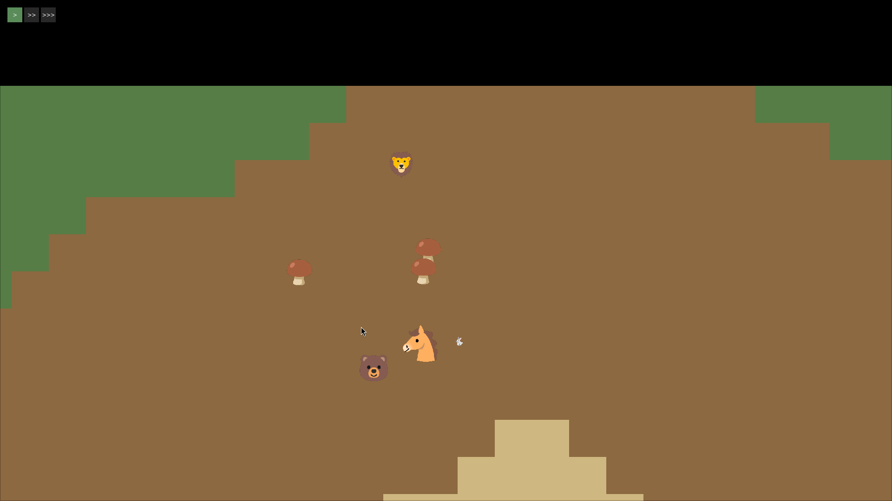

Around a week has passed since the first update. During this period, I had a deeper look at the codebase, and experimented adding new features to see how this code would change. This led me to a Drive + Task architecture. This is probably not a novel thing, but I haven't seen it before, and don't know its original name. I believe this was likely implemented in a similar way in other games as well. Well, how does it work?
During the game, there are hominids, bisons, mammoths, etc, walking around and making choices. Each animal has a brain, and this brain periodically gets to decide if it should keep doing what it's doing, or reconsider and go do something else. These choices are made via a "Drive" system. An animal has a list of drives (drive to forage, drive to hunt, drive to flee, drive to wander, drive to rest, etc). On each check, every drive has an urgency/score, that shows what is currently important or not.
For example: an animal that was eating, realized that it was also being hunted. Now, its drive to flee is suddenly higher than its drive to eat, even if it was a little hungry.
If a drive was chosen as more urgent, it will then select a task, based on specific criteria of that drive (basically, a SelectTask function in the code). This task is the way that animal or hominid will act on to fulfill its drive.
For example: a hominid has a "drive to eat", and decides (based on the urgency/score) that the time to eat is now. This hominid will then check its inventory, looking for food. If there's food, it'll choose the Eat task. If not, it'll choose the Forage task, to try and find some food. So a drive likely leads to a task. And this chosen task depends on specific criteria, such as physical proximity or health.
I've noticed that after some initial tinkering, it seems like most of the game's code can fit in these systems. Recently, many new implementations were just new or modified drives and tasks.
I find it really interesting to notice the effects of changes made to tasks, or what new behaviors appear after the introduction of new drives. For example: hominids rest by the campfire by default. This creates a rather common effect - to see multiple humans gathered around the campfire. The gathering wasn't programmed into the game, but it happened as a consequence of individual drives. I feel like experimenting with emergent social behavior as a consequence of drive-fulfillment.
The same happened with animals. After finding some food, they tend to stay mostly in the same place, because when the "eat drive" triggers, it calls the forage task, which immediately finds food closeby. Adding a drive to stay close to similar animals can likely trigger some herd behavior (also something I want to play with).
I want this game to have interesting hunting techniques, such as luring, tricking, or tiring animals. I want the player to feel rewarded after a good hunt, but also to experience misery and starvation.


